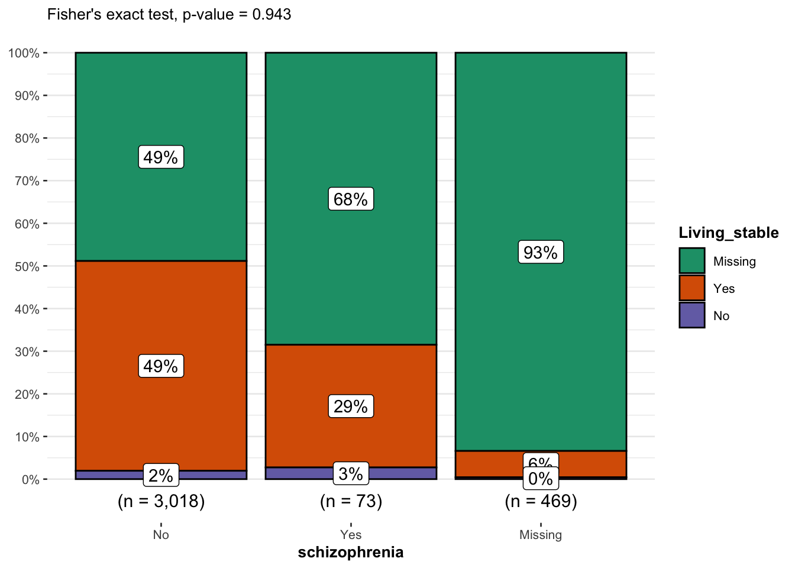
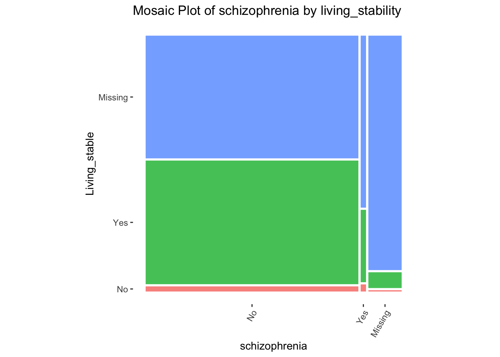

#Installing Required Packages
#install.packages("public.ctn0094data")
#install.packages("gtsummary")
#Install ggstatsplot package
#install.packages("ggstatsplot")
#install.packages("ggmosaic")
#install.packages("tidyverse")
# Loading Required Packages
library(public.ctn0094data)
library(gtsummary)
library(ggstatsplot)
library(ggmosaic)
library(tidyverse) 13 Fisher’s Exact Test
13.1 Introduction to Fisher’s Exact test
- Fisher’s exact test is a non-parametric statistical test used to test an association between categorical variables.
- It is analogous to Chi-square test, but Fisher’s exact test is conducted when rule of Chi-square test cannot be applied, such as when the sample size in small and more than 20% of cells have expected frequency count of <5 in a contingency table (Bower 2003).
- Used to assess whether the proportions of categories in two group variables significantly differ from each other.
- Uses (hypergeometric) marginal distribution to compute exact p-values which are not approximated, which are also somewhat conservative.
- This particular test is used to obtain the probability of observing the combination of frequencies that we can actually see.
13.2 Assumptions
- Assumes that the individual observations are independent - variable are not paired or related.
- Assumes that the row and column totals are fixed or conditioned.
- The variables are categorical and randomly sampled.
- Observations are count data.
13.3 Hypotheses
The hypotheses of Fisher’s exact test are similar to Chi-square test:
- Null hypothesis:\((H_0)\) There is no significant relationship between the categorical variables (variables are independent).
- Alternative hypothesis: \((H_1)\) There is a significant relationship between the categorical variables (variables are dependent).
13.4 Mathematical definition of Fisher’s Exact test
This test is usually used as a one-tailed test. It can also be used as a two tailed test. Fisher’s exact test for a one-tailed \(p\)-value is calculated using the following formula:
\[ p = {(a+b)!(c+d)!(a+c)!(b+d)! \over a! b! c! d! n!}, \] where \(a\),\(b\),\(c\), and \(d\) are the individual frequencies on the 2x2 contingency table and \(n\) is the population size (total frequency).
13.5 Intalling required packages
First, we installed and loaded the packages needed for this presentation.
13.6 Data source and description
For this demonstration of the Fisher’s Exact test , we utilized the demographics, and psychiatric data sets from the public.ctn0094data package the public.ctn0094data package. The public.ctn0094data package contains de-identified and harmonized datasets from the Clinical Trials Network (CTN) protocol number 0094. This project, funded by the US National Institute on Drug Abuse (NIDA), focuses on opioid use disorder (OUD) and includes data from three clinical trials: CTN-0027, CTN-0030, and CTN-0051.The data describe the experiences of patients seeking care for opoid use disorder (OUD).
The demographics dataset contains the demographic variables such as age, sex, race, living condition, marital status etc. The psychiatric dataset contains data on different mental health issues and susbstance use, including bipolar, depression, schizophrenia, cocaine use etc.
# # Search for suitable data sets; this lists of all datasets in package
# data(package = "public.ctn0094data")
data(demographics, package = "public.ctn0094data")
colnames(demographics)[1] "who" "age" "is_hispanic" "race"
[5] "job" "is_living_stable" "education" "marital"
[9] "is_male" [1] "who" "has_schizophrenia" "has_major_dep"
[4] "has_bipolar" "has_anx_pan" "has_brain_damage"
[7] "has_epilepsy" "depression" "anxiety"
[10] "schizophrenia" "has_opiates_dx" "has_alcol_dx"
[13] "has_amphetamines_dx" "has_cannabis_dx" "has_cocaine_dx"
[16] "has_sedatives_dx" 13.6.1 Create a model data frame
We joined the demographics and psychiatric data sets within the public.ctn0094data package by participants ID (who variable) to create new data frame.
13.6.2 Participants characteristics Summary table
Here, we want to view the frequency of the variables in our dataset using the table summary function tbl_summary ().
# Create Table 1, change the Label using the label function and also view the missing values
model_df %>%
tbl_summary(
label = list(
age = "Age",
race = "Race",
education = "Education_Level",
is_male = "Male",
marital = "Marital_Status",
is_living_stable = "Living_Condition",
has_schizophrenia = "Schizophrenia"
),
missing_text = "(Missing)"
)| Characteristic | N = 3,5601 |
|---|---|
| Age | 34 (27, 45) |
| (Missing) | 208 |
| Race | |
| Black | 365 (10%) |
| Other | 506 (14%) |
| Refused/missing | 58 (1.6%) |
| White | 2,631 (74%) |
| Education_Level | |
| HS/GED | 691 (39%) |
| Less than HS | 352 (20%) |
| More than HS | 724 (41%) |
| (Missing) | 1,793 |
| Male | 2,351 (66%) |
| (Missing) | 4 |
| Marital_Status | |
| Married or Partnered | 329 (19%) |
| Never married | 1,028 (59%) |
| Separated/Divorced/Widowed | 394 (23%) |
| (Missing) | 1,809 |
| Living_Condition | 1,535 (96%) |
| (Missing) | 1,962 |
| Schizophrenia | 73 (2.4%) |
| (Missing) | 469 |
| 1 Median (IQR); n (%) | |
13.6.3 Recode to indicate variable factor levels
# Recoding `is_living_stable` and has_schizophrenia`converting all NA to 99
model_df <-
model_df %>%
mutate(
Living_stable = ifelse(is.na(is_living_stable), 99, is_living_stable),
Living_stable = factor(
Living_stable, levels = c(1, 2, 99), labels = c("No", "Yes", "Missing")
)
) %>%
mutate(
schizophrenia = ifelse(is.na(has_schizophrenia), 99, has_schizophrenia),
schizophrenia = factor(
schizophrenia, levels = c(1, 2, 99), labels = c("No", "Yes", "Missing")
)
)
model_df # A tibble: 3,560 × 9
age race education is_male marital is_living_stable has_schizophrenia
<dbl> <fct> <fct> <fct> <fct> <fct> <fct>
1 43 White More than HS Yes Married … Yes No
2 30 White More than HS No Never ma… Yes No
3 23 Black More than HS No Never ma… Yes No
4 19 White More than HS Yes Never ma… Yes No
5 31 White <NA> No <NA> <NA> <NA>
6 43 White HS/GED Yes Married … Yes No
7 33 White More than HS No Never ma… Yes No
8 44 White <NA> Yes <NA> <NA> <NA>
9 25 Black HS/GED No Never ma… Yes No
10 29 Other More than HS No Never ma… Yes Yes
# ℹ 3,550 more rows
# ℹ 2 more variables: Living_stable <fct>, schizophrenia <fct>
13.7 Contingency Table with tbl_summary Function
- This is a table that shows the distribution of a variable in the rows and columns. Sometimes referred to as a 2x2 table. They are useful in summarizing categorical variables.
- We want to create a contingency table of the demographic variable by
living_stableto Check the distribution of the frequency count of variables (is_living_stable,Yes=stableandNo=unstablehas_schizophrenia,Yes= schizophrenia diagnosed andNo= no schizophrenia).
# creating new data frame keeping only the categorical variable of interest
# for our contingency table in the next section
finalModel_df <- select(model_df, schizophrenia, Living_stable)
# Adding label and overall number
finalModel_df %>%
tbl_summary(by = Living_stable) %>%
#add_n() %>%
add_overall() %>%
modify_spanning_header(c("stat_1", "stat_2") ~ "**Living_stable**")| Characteristic | Overall, N = 3,5601 | Living_stable | Missing, N = 1,9621 | |
|---|---|---|---|---|
| No, N = 631 | Yes, N = 1,5351 | |||
| schizophrenia | ||||
| No | 3,018 (85%) | 59 (94%) | 1,485 (97%) | 1,474 (75%) |
| Yes | 73 (2.1%) | 2 (3.2%) | 21 (1.4%) | 50 (2.5%) |
| Missing | 469 (13%) | 2 (3.2%) | 29 (1.9%) | 438 (22%) |
| 1 n (%) | ||||
From the table, it seems like the patients who were homeless (answered no to living_stable) were less likely to be diagnosed with schizophrenia. However, this is not conclusive as we cannot tell if this relationship was a true correlation or it was due to random sampling error. So we will perform the Fisher’s Exact test to confirm the relationship.
13.8 Performing the Fisher’s exact test using the function fisher.test()
- A priori, we hypothesized that people who are diagnosed as being schizophrenic are more likely to homeless (unstable living). So we conducted a one-tailed Fisher’s Exact test and specify the direction of the test as “greater”.
- For a two-tailed test, the
alternativeargument has a default value of"two.sided".
# running one-tailed fisher's exact test
fModelGreater_ls <- fisher.test(
x = model_df$is_living_stable,
y = model_df$has_schizophrenia,
alternative = "greater"
)
fModelGreater_ls
Fisher's Exact Test for Count Data
data: model_df$is_living_stable and model_df$has_schizophrenia
p-value = 0.9429
alternative hypothesis: true odds ratio is greater than 1
95 percent confidence interval:
0.1159862 Inf
sample estimates:
odds ratio
0.4175209 # running two-tailed Fisher's exact test
fisher.test(
x = model_df$is_living_stable,
y = model_df$has_schizophrenia
)
Fisher's Exact Test for Count Data
data: model_df$is_living_stable and model_df$has_schizophrenia
p-value = 0.2246
alternative hypothesis: true odds ratio is not equal to 1
95 percent confidence interval:
0.09821534 3.75679596
sample estimates:
odds ratio
0.4175209 13.9 Interpretation of results
13.9.1 One-Tailed test
- Null Hypothesis, \(H_0\): people who reported unstable living (homeless) are not more often diagnosed with schizophrenia.
- Alternative Hypothesis, \(H_A\): people who reported unstable living(homeless) are more often diagnosed with schizophrenia.
The \(p\) value is greater than 0.05 (\(p\) = 0.9429), so we fail to reject the null hypothesis. We conclude that people who reported unstable living are not significantly more likely to be diagnosed with schizophrenia than those who reported stable living.
13.9.2 Two-tailed analysis
- Null Hypothesis, \(H_0\): There is no association between living-stable and schizophrenia diagnosis variable
- Alternative Hypothesis, \(H_A\): There is an association between living condition and schizophrenia diagnosis.
Our \(p\)-value = 0.2246, so we fail to reject the null hypothesis, indicating that there is no statistically significant association between living condition and schizophrenia diagnosis.
13.10 Visualization of the statistical test output
We would like to have a visual representation of the distribution of the categories of our analysis. As shown in the Fisher’s Exact test, there was no statistical significant association between living-stability and schizophrenia diagnosis. Hence, the interpretation of the plots below is based on description of the charts.
13.10.1 Barplots
We will first construct a barplot using ggstatsplot:: (for statistical details).
displayP_char <- ifelse(
test = fModelGreater_ls$p.value < 0.001,
yes = "< 0.001",
no = as.character(round(fModelGreater_ls$p.value, 3))
)
# combine plot and statistical test with ggbarstats
ggbarstats(
data = finalModel_df,
x = Living_stable,
y = schizophrenia,
results.subtitle = FALSE,
subtitle = paste0("Fisher's exact test, p-value = ", displayP_char)
)
Patients who indicated living_stable (not homeless) had the highest proportion of not having being diagnosed with schizophrenia. Patients who indicated not having stable living (homeless) had the highest proportion of being diagnosed with schizophrenia.
13.10.2 Mosaic plots
# Basic Mosaic Plot
mosaic_basic <- finalModel_df %>%
ggplot() +
geom_mosaic(
aes(
x = product(schizophrenia),
fill = Living_stable
)
) +
labs(
#y = "Living_stable",
#x = "schizophrenia",
title = "Mosaic Plot of schizophrenia by living_stability") +
# Specifies default `geom_mosaic` aesthetics, e.g white panel background,
# removes grid lines, adjusts widths and heights of rows and columns to
# reflect frequencies
theme_mosaic() +
theme(legend.position = "None") +
theme(axis.text.x = element_text(angle = 60, hjust = 1, vjust = 1))
mosaic_basic
Compared to those who are not homeless, those who are homeless had the highest proportion of being diagnosed with schizophrenia.
13.11 References
- Bower, Keith M. 2003. “When to Use Fisher’s Exact Test.” In American Society for Quality, Six Sigma Forum Magazine, 2:35–37. 4.
- McCrum-Gardner, Evie. 2008. “Which Is the Correct Statistical Test to Use?” British Journal of Oral and Maxillofacial Surgery 46 (1): 38–41.
- Wong KC. Chi squared test versus Fisher’s exact test. Hong Kong Med J. 2011 Oct;17(5):427
- Patil, I. (2021). Visualizations with statistical details: The ‘ggstatsplot’ approach. Journal of Open Source Software, 6(61), 3167, doi:10.21105/joss.03167
- Zach Bobbit. (2021). Fisher’s Exact Test: Definition, Formula, and Example